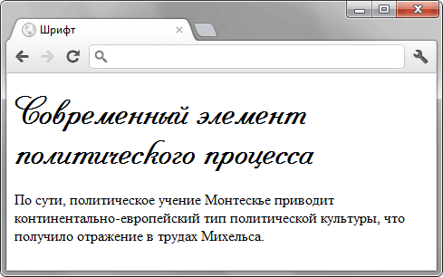
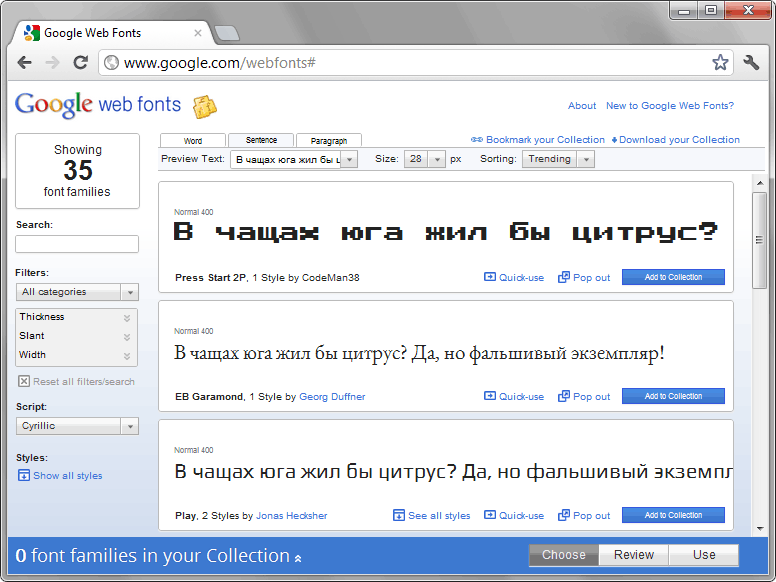
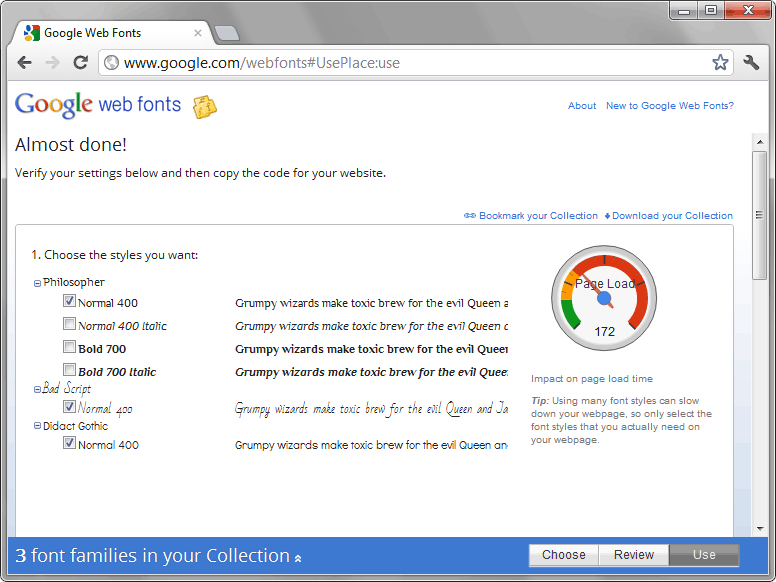

Загрузка своего шрифта
Если у вас на компьютере уже установлен специфический шрифт, то в стилях достаточно добавить строку.
h1 { font-family: SuperPuperFont; }Значением свойства font-family выступает название гарнитуры шрифта, она будет применяться ко всем заголовкам <h1>. Но что увидят посетители сайта, у которых наш эффектный и редкий шрифт не установлен? Подобная ситуация наиболее вероятна, так что если браузер не распознаёт заявленный шрифт, он будет использовать шрифт по умолчанию, к примеру в Windows это Times New Roman. Весь наш тщательно продуманный шрифтовой дизайн в одночасье рассыплется и пойдёт прахом, поэтому надо поискать наиболее универсальное решение. Первое что сразу же приходит в голову — это организовать загрузку файла шрифта на компьютер пользователя и отображение текста выбранным шрифтом. По сравнению с другими методами вроде отображения текста через рисунок этот способ самый простой и универсальный.
Какие плюсы в итоге даёт нам загрузка файла шрифта с последующим применением через CSS.
- Текст легко добавлять и править.
- В браузере можно пользоваться поиском и находить желаемые фразы.
- В настройках браузера можно уменьшать или увеличивать размер шрифта добиваясь комфортного просмотра.
- Поисковые системы хорошо индексируют содержимое документа.
- Текст можно выделить и скопировать в буфер, а также перевести на другой язык.
- Параметры текста вроде межстрочного расстояния, цвета, размера и тому подобное легко менять с помощью свойств CSS.
- К тексту опять же через CSS просто добавлять разные эффекты, например тень.
Как видите, преимуществ очень много. Небольшие минусы тоже имеются и для баланса их стоит упомянуть.
- Не все версии браузеров поддерживают загружаемый шрифт и один для всех формат.
- Файл, содержащий гарнитуру шрифта, может занимать большой объём, замедляя тем самым загрузку веб-страницы.
В табл. 1 перечислены версии браузеров и форматы шрифтов, которые они поддерживают.
| Формат | Internet Explorer | Chrome | Opera | Safari | Firefox | Android |
| TTF | 9 | 4 | 10 | 3.1 | 3.5 | 2.2 |
| EOT | 5-8 | |||||
| WOFF | 9 | 5 | 3.6 | |||
| SVG | 1 | 9 | 3.1 | 3.5 |
Самый поддерживаемый формат — TTF. За исключением IE до версии 9.0 все браузеры его прекрасно понимают. Так что если у вас шрифт именно в этом формате и вы ориентируетесь на современные браузеры, никаких дополнительных действий делать не придётся. Достаточно в стилях написать следующий код (пример 1).
Пример 1. Подключение TTF
<!DOCTYPE html>
<html>
<head>
<meta charset="utf-8">
<title>Шрифт</title>
<style>
@font-face {
font-family: Pompadur; /* Гарнитура шрифта */
src: url(fonts/pompadur.ttf); /* Путь к файлу со шрифтом */
}
h1 {
font-family: Pompadur, 'Comic Sans MS', cursive;
}
</style>
</head>
<body>
<h1>Современный элемент политического процесса</h1>
<p>По сути, политическое учение Монтескье приводит
континентально-европейский тип политической культуры,
что получило отражение в трудах Михельса.</p>
</body>
</html>Вначале загружаем сам файл шрифта с помощью правила @font-face. Внутри него пишем название гарнитуры шрифта через font-family и путь к файлу через src. Дальше используем шрифт как обычно. Так, если нам требуется задать шрифт заголовка, то для селектора h1, как показано в примере, задаём свойство font-family с именем загруженного шрифта. Для старых версий IE через запятую перечисляем запасные варианты. В данном случае шрифт заголовка будет «Comic Sans MS», поскольку IE8 и ниже не поддерживает формат TTF.
Результат данного примера показан на рис. 1.

Рис. 1. Заголовок с загруженным шрифтом
Что делать, если вам позарез нужен свой шрифт в IE8? К счастью, @font-face позволяет подключать одновременно несколько файлов шрифтов разных форматов. Браузеру остаётся только выбрать подходящий. Таким образом, универсальное решение, работающее во всех браузерах, сводится к конвертации имеющегося формата TTF в EOT с последующим подключением обоих файлов.
Для конвертации имеется несколько онлайновых сервисов, позволяющих загрузить TTF-файл и на выходе получить EOT-файл. К сожалению, у большинства этих сервисов одна и та же беда — файл мы получаем, но русский язык в нём не поддерживается. В итоге нужный результат не достигается, конвертация происходит неверно. Среди проверенных сайтов оказался один, показавший текст в IE правильно.
http://www.kirsle.net/wizards/ttf2eot.cgi
Переходим на этот сайт, загружаем TTF-файл и нажимаем кнопку «Convert TTF to EOT», после чего сохраняем полученный файл в папку со шрифтами. В стилях осталось совершить небольшой трюк и заставить разные браузеры загружать шрифт в нужном формате. Для этого добавляем два параметра src. Первый указывает на файл EOT и предназначен для старых версий IE. Второй параметр src должен содержать два адреса перечисляемых через запятую, один из них указывает на файл TTF. Дело в том, что IE версии 8.0 и младше не понимает запятую в параметре src и, соответственно, будет игнорировать параметр целиком. Вариантов написания может быть несколько, например, повторить url, указать имя шрифта внутри параметра local или вообще написать несуществующий шрифт. Если браузер не сможет загрузить такой шрифт, то он перейдёт ко второму в списке, а он у нас написан правильно. Допустимые способы написания.
src: url(fonts/pompadur.ttf), url(fonts/pompadur.ttf);
src: local(pompadur), url(fonts/pompadur.ttf);
src: local('bla bla'), url(fonts/pompadur.ttf);
Работающий вариант подключения шрифта для всех версий браузеров показан в примере 2.
Пример 2. Подключение EOT
<!DOCTYPE html>
<html>
<head>
<meta charset="utf-8">
<title>Шрифт</title>
<style>
@font-face {
font-family: Pompadur; /* Гарнитура шрифта */
src: url(fonts/pompadur.eot); /* Для IE5-8 */
src: local(pompadur), url(fonts/pompadur.ttf); /* Для остальных браузеров */
}
h1 {
font-family: Pompadur, 'Comic Sans MS', cursive;
}
</style>
</head>
<body>
<h1>Современный элемент политического процесса</h1>
<p>По сути, политическое учение Монтескье приводит
континентально-европейский тип политической культуры,
что получило отражение в трудах Михельса.</p>
</body>
</html>Google Web Fonts
Удобный сервис, берущий на себя рутину по поддержке разных форматов шрифтов и версий браузеров, вы найдёте по адресу www.google.com/webfonts. Хотя в коллекции сравнительно мало разных шрифтов (их несколько десятков), все они подобраны очень качественно и свободны для использования на сайтах.
Перед выбором шрифта переключите значение Script на Cyrillic, тогда вы увидите список шрифтов поддерживающих русский язык (рис. 2).

Рис. 2. Выбор шрифтов в Google Web Fonts
Понравившийся шрифт предварительно следует добавить в коллекцию, нажав на кнопку «Add to Collection», а затем на кнопку «Use» в правом нижнем углу экрана. На следующей странице (рис. 3) вы можете окончательно выбрать нужные вам шрифты. При этом надо понимать, что гарнитура шрифта может содержать несколько начертаний и каждое из них повышает объём загружаемых файлов.

Рис. 3. Загружаемые на страницу шрифты
Подключить выбранные шрифты можно одним из трёх путей, добавляемый код можно скопировать ниже по странице.
1. Через элемент <link>. Строка будет иметь примерно следующий вид.
<link href='http://fonts.googleapis.com/css?family=Philosopher&subset=cyrillic' rel='stylesheet' type='text/css'>2. Через правило @import. Такую строку вставляем в свой CSS-файл в самом верху.
@import url(http://fonts.googleapis.com/css?family=Philosopher&subset=cyrillic);3. Через JavaScript.
В принципе, все пути равноценны, так что выбирайте по своему предпочтению.
Преимущества применения данного сервиса такие.
- Шрифты свободны для использования, вам не нужно за них платить.
- Предлагаемые шрифты «заточены» для просмотра на экране, файлы оптимизированы и занимают сравнительно небольшой объём.
- Браузер определяется автоматически и под него выдаётся шрифт в нужном формате.
Один из основных плюсов сервиса, что шрифты хранятся в форматах TTF, EOT, WOFF, SVG и загружаются после проверки браузера. Так, формат EOT будет доступен только для старых версий IE.
Использовать Google Web Fonts или нет решать вам. Если не нашли там подходящего шрифта, всегда можно подключить популярный и распространённый TTF. Тем более, что он поддерживается последними версиями всех популярных браузеров.

Все материалы сайта доступны по лицензии Creative Commons «Attribution-NonCommercial» («Атрибуция — Некоммерческое использование») 4.0 Всемирная, если не указано иное.